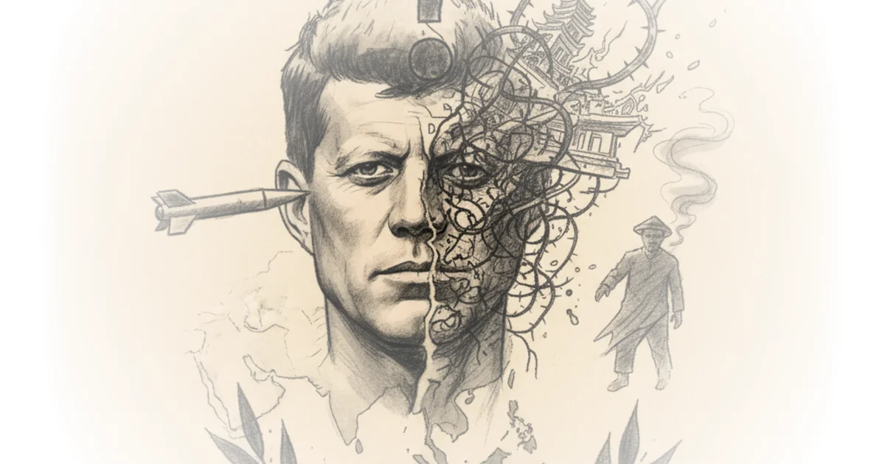

Jeff Stein's latest analysis for SpyTalk dismantles the myth of JFK's unwavering resolve, revealing a president paralyzed by indecision during a crisis that would ultimately cost thousands of lives. By focusing on the bureaucratic machinery rather than the man, Stein exposes how a rushed, weekend decision by a small clique of officials set in motion a chain of events that the White House could not control. This is not a story of heroic leadership, but a cautionary tale about the dangers of regime change without a strategy for what comes next.
The Illusion of Control
Stein's central thesis is that Kennedy's hesitation was not a sign of prudence, but a fatal flaw that surrendered American leverage to unpredictable forces. The author highlights a specific cable sent by the President to Ambassador Henry Cabot Lodge, Jr., just days after initially green-lighting a coup. "Until the very moment of the go signal for the operation by the Generals, I must reserve a contingent right to change course and reverse previous instructions," JFK wrote, adding, "I know from experience that failure is more destructive than an appearance of indecision." Stein argues that this attempt at flexibility was a disaster in practice. The core of the argument is that Kennedy's "tentative, 'contingent' reversal of course was—at best—a half-step followed by more back and forth shuffling that left U.S. policy a muddle."

This framing is particularly effective because it shifts the blame from a single villain to a systemic failure of command. Stein writes that "while the generals revved up their plotting in October [1963], JFK drifted along, buffeted by the pro-and anti-Diem cliques in his administration and unwilling or unable to take a firm position on the coup." The result was a vacuum of leadership that the CIA and State Department filled with their own agendas. Critics might argue that Kennedy was genuinely trapped by the escalating Buddhist crisis and the need to distance the U.S. from an increasingly unpopular ally, but Stein's evidence suggests the administration never fully grappled with the consequences of removing a leader without a viable replacement.
By his indecisiveness, Kennedy relinquished whatever leverage the United States might have had to influence events on the ground.
The human cost of this bureaucratic shuffle is starkly illustrated in the fate of the South Vietnamese leadership. Stein details how the coup, intended to install a more democratic government, resulted in the brutal murder of President Ngo Dinh Diem and his brother, Nhu. The generals, led by "Big Minh," had little popular support or governing experience. Under Minh's orders, the brothers were loaded into an armored personnel carrier, their hands tied behind their backs. Diem was shot in the back of the head; his brother was butchered with a bayonet. Stein notes that Kennedy, who had explicitly wanted them flown safely into exile, was "horrified" by the outcome. The administration had blood on its hands, a reality that contradicts the sanitized version of history often told about this era.
The Architects of Chaos
Stein meticulously traces the origins of the coup to a specific group of "Gung-ho boys" within the State Department, rather than a broad consensus or a directive from the President. He identifies Roger Hilsman, a mid-level official, and Averell Harriman, the Undersecretary of State, as the primary drivers who pushed for Diem's removal while other key principals were away. "Hilsman, Harriman and Forestal—the 'Gung-ho boys,' Cheevers calls them—pushed Kennedy to immediately sign off," Stein writes, noting that CIA chief John McCone was yachting and Defense Secretary Robert McNamara was hiking when the fateful decision was made. This lack of deliberative review is a critical point; the policy that would define the next decade of American foreign policy was altered in a weekend rush.
The author also challenges the narrative that the coup was a conservative or hawkish move. Instead, Stein points out that "it was actually liberals at the State Department who pushed upon Kennedy the idea that Diem should be disposed of." He even notes that John Kenneth Galbraith, the Harvard economist and ambassador to India, suggested ditching Diem as early as 1961 to save the "bright promise" of the New Frontier from being "sunk under the rice fields." This reframing is vital for understanding the ideological blind spots of the era. The progressive-minded coup plotters believed that sticking with an authoritarian like Diem undercut the U.S. case for democracy, yet they failed to see that removing him would create a power vacuum that the North Vietnamese and the Viet Cong would exploit.
Stein draws a parallel to the "Pottery Barn rule" coined by Colin Powell decades later: "If you break it, you own it." The U.S. had been party to an insurrection, leaving the country all but rudderless in the midst of its battle against the Viet Cong. "It now owned the outcome," Stein asserts. "America's long 'descent' into a full-scale land war in Southeast Asia—something Kennedy had been warned against and never wanted—had begun." This connection to the broader tragedy of the Vietnam War gives the piece its emotional weight. The coup was not an isolated incident but the catalyst for a conflict that would consume American lives and resources for another decade.
Getting rid of the top guy doesn't solve your problem, as America learned the hard way in Iraq and again most recently, in Iran.
The article also touches on the internal dissent that was ignored. William Colby, the CIA station chief in Saigon, warned that the coup plan was "throwing away bird in hand before we have adequately identified birds in bush, or songs they may sing." Colby would later call the coup "the worst mistake of the Vietnam War." Stein uses this to highlight the tragedy of ignored expertise. The CIA brass, cut out of the weekend discussions, recognized immediately that the generals plotting to depose Diem inspired no confidence. Yet, Ambassador Lodge, a political rival of Kennedy's, pushed the coup with gusto, demanding the removal of the skeptical CIA station chief and replacing him with a pro-coup officer, Lucien Conein.
The Legacy of Indecision
Stein's analysis concludes by examining the aftermath and the enduring lessons of the event. When Kennedy learned of the murders, he "leaped to his feet and rushed from the room with a look of shock and dismay on his face which I had never seen before," according to General Maxwell Taylor. This reaction underscores the disconnect between the President's intentions and the reality on the ground. The administration had authorized a coup but failed to control the outcome, leading to a regime change that destabilized South Vietnam further.
The author also addresses the role of the media, noting that aggressive reporters like David Halberstam and Neil Sheehan challenged the official narrative, writing relentlessly about Diem's abuses while questioning the military's claims of victory. Kennedy's frustration with the press is evident in his private comments, where he referred to Madame Nhu as "this bitch" and questioned her sexuality. Stein suggests that the administration's desire to control the narrative and the pressure from the media created a toxic environment where decisive, thoughtful action was replaced by reactive, short-term fixes.
Critics might note that Stein's reliance on Jack Cheevers' book, while thorough, may overstate the role of individual personalities in a complex geopolitical landscape. The structural pressures of the Cold War and the fear of communist expansion were powerful forces that may have limited Kennedy's options regardless of his personal indecision. However, Stein's focus on the specific bureaucratic failures and the lack of a clear strategy for the post-coup period remains a compelling argument. The piece serves as a reminder that in foreign policy, the absence of a plan is as dangerous as a bad one.
Bottom Line
Stein's commentary offers a sobering correction to the "Camelot" myth, demonstrating that Kennedy's greatest foreign policy failure was not a lack of resolve, but a paralysis that allowed others to steer the ship into a storm. The strongest part of the argument is the detailed exposure of how a small group of officials bypassed normal channels to initiate a coup without a viable exit strategy. Its biggest vulnerability is the potential to oversimplify the complex Cold War dynamics that constrained all actors, yet the human cost of that indecision remains undeniable. Readers should watch for how this historical pattern of regime change without a plan continues to echo in modern American foreign policy, where the "pottery barn rule" is often invoked too late.